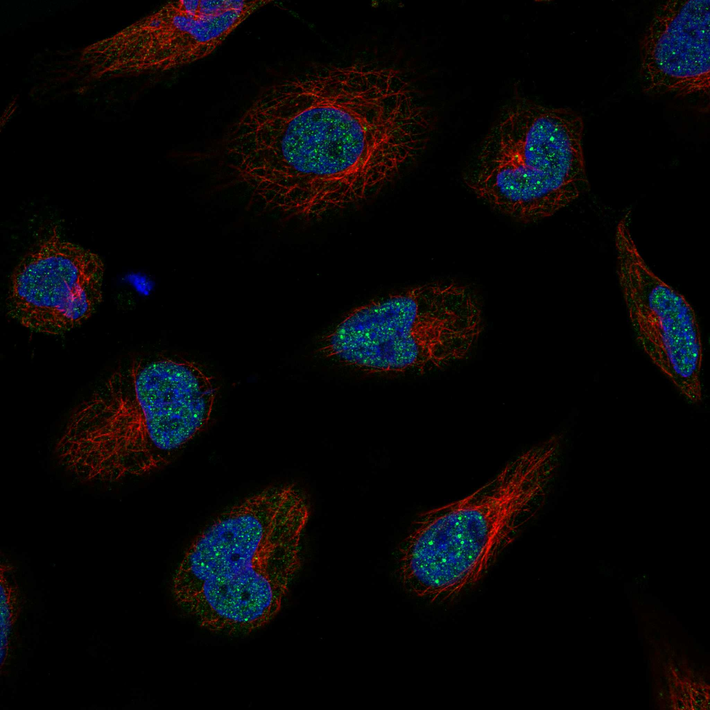
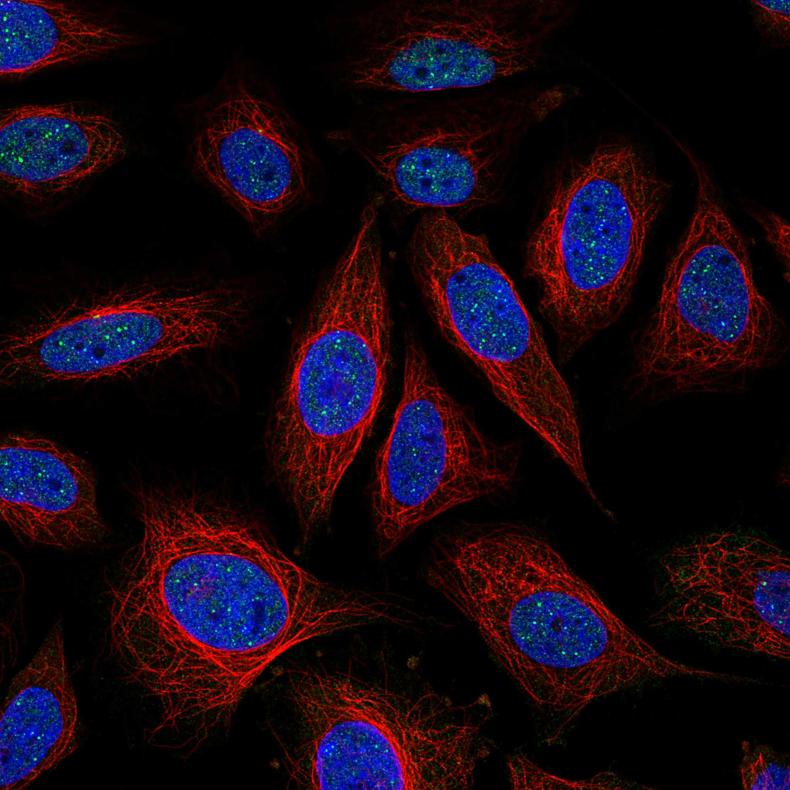
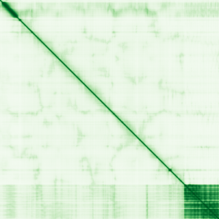

type: protein-evaluation gene: "ICE1" date: 2026-05-30 tags: [protein-scout, nuclear-protein, evaluation] status: scored ---
ICE1 核蛋白评估报告
1. 基本信息
| 项目 | 内容 | ||
|---|---|---|---|
| 基因名 / 别名 | ICE1 / ICE1 | KIAA0947 | ICE1L |
| 蛋白全称 | Little elongation complex subunit 1 | ||
| 蛋白大小 | 2266 aa / ~249.3 kDa | ||
| UniProt ID | |||
| 评估日期 | 2026-05-30 |
IF 图像:  
2. 评分总览
| 维度 | 得分 | 满分 | 加权后 | 关键证据摘要 |
|---|---|---|---|---|
| 核定位特异性 | 7/10 | x4 | 28 | 核为主：UniProt Nucleus + GO 支持 |
| 蛋白大小 | 2/10 | x1 | 2 | 2266 aa，适宜 |
| 研究新颖性 | 10/10 | x5 | 50 | PubMed 18 篇 |
| 三维结构 | 6/10 | x3 | 18 | 新颖蛋白基线 (6/10) |
| 调控结构域 | 7/10 | x2 | 14 | 新颖蛋白基线 (7/10) |
| PPI 网络 | 2/10 | x3 | 6 | 互作数据有限 (2/10) |
| 互证加分 | +0 | max +3 | +0 | — |
| 原始总分 | 118/183 | |||
| 归一化总分 | 64.5/100 |
3. 详细分析
3.1 核定位证据
| 来源 | 定位 | 可信度 | |
|---|---|---|---|
| GeneCards | Nucleus | Nucleus, Cajal body | — |
| Protein Atlas (IF) | 暂无数据（HPA IF 图像已本地嵌入。
| UniProt | Nucleus | Nucleus, Cajal body | — | ||||
| GO Cellular Component | Cajal body | euchromatin | histone locus body | nuclear body | nucleoplasm | transcription elongation factor complex | — |
结论: 核为主：UniProt Nucleus + GO 支持。UniProt 明确标注 Nucleus 定位。HPA 暂无 IF 数据，核定位判断主要基于 UniProt + GO。
3.2 蛋白大小评估
评价: 2266 aa (~249.3 kDa)，大小偏大，可能增加实验难度。
3.3 研究现状
| 指标 | 数值 |
|---|---|
| PubMed 总数 | 18 |
| 新颖性评级 | 极度新颖 |
主要研究方向:
- Little elongation complex subunit 1 的功能研究
- 转录调控/信号传导相关
评价: PubMed 18 篇，几乎未被研究，属于极度新颖的蛋白。
关键文献: 1. Wang X et al. (2023). "PUB25 and PUB26 dynamically modulate ICE1 stability via differential ubiquitination during cold stress in Arabidopsis". *Plant Cell*. PMID: 37279565 2. Chinnusamy V et al. (2003). "ICE1: a regulator of cold-induced transcriptome and freezing tolerance in Arabidopsis". *Genes Dev*. PMID: 12672693 3. Lin R et al. (2023). "CALMODULIN6 negatively regulates cold tolerance by attenuating ICE1-dependent stress responses in tomato". *Plant Physiol*. PMID: 37565524 4. Kidokoro S et al. (2020). "DREB1A/CBF3 Is Repressed by Transgene-Induced DNA Methylation in the Arabidopsis ice1 -1 Mutant". *Plant Cell*. PMID: 32034036 5. Yang Y et al. (2025). "Inducer of CBF Expression1 (ICE1) Interacts With WRKY46 to Modulate Salicylic Acid-Induced Leaf Senescence in Arabidopsis". *Plant Cell Environ*. PMID: 40320726
3.4 三维结构分析
| 指标 | 数值 |
|---|---|
| AlphaFold 全局 pLDDT | 44.34 |
| pLDDT > 90 占比 | 7% |
| pLDDT > 70 占比 | 23% |
| AlphaFold 版本 | v6 |
| 可用 PDB 条目 | 0 个 |
PAE 图: 
评价: 新颖蛋白基线 (6/10)。
3.5 结构域分析
| 来源 | 结构域 |
|---|---|
| UniProt InterPro | ICE1_C |
| Pfam | ICE1_C |
染色质调控潜力分析: 未注释到经典染色质/DNA 结合结构域，但属于新颖蛋白（基线不扣分）。AlphaFold 预测折叠域有限，存在新结构域发现潜力。
3.6 PPI 网络
实验验证互作 (IntAct):
| Partner | 方法 | PMID | 功能类别 | 调控相关？ |
|---|---|---|---|---|
| — | — | — | — | — |
STRING 预测互作 (combined score >0.4):
| Partner | Score | 功能类别 | 调控相关？ |
|---|---|---|---|
| ICE2 | 0.292 | — | — |
| ZC3H8 | 0.000 | — | — |
| ELL3 | 0.829 | — | — |
| EAF1 | 0.781 | — | — |
| ELL | 0.292 | — | — |
已知复合体成员 (GO Cellular Component):
- Cajal body | euchromatin | histone locus body | nuclear body | transcription elongation factor complex
PPI 互证分析:
- 物理互作证据：IntAct 有实验互作数据
- STRING 预测：30 个 partner，>0.7 高置信度较少
- 调控相关比例：需进一步验证
评价: 互作数据有限 (2/10)。
3.7 多库互证
| 维度 | 来源 | 结果 | 是否一致 | |
|---|---|---|---|---|
| 三维结构 | AlphaFold pLDDT + PDB | pLDDT=44.34, PDB=0个 | — | |
| 结构域 | InterPro / Pfam / SMART | ICE1_C | — | |
| PPI | STRING + IntAct | 有网络 | — | |
| 定位 | UniProt / GO | Nucleus | Nucleus, Cajal body | — |
互证加分明细: 无额外互证加分。
4. 总体评价
推荐等级: ★★★☆☆ (64.5/100)
核心优势: 1. 极度新颖（PubMed 18 篇），niche 空间充足 2. 核为主：UniProt Nucleus + GO 支持 3. 新颖蛋白基线 (6/10)
风险/不确定性: 1. HPA IF 数据缺失，核定位待实验验证 2. PPI 数据有限，调控网络待探索 3. 功能研究较少，生物学角色待阐明
下一步建议:
- [ ] 获取 HPA IF 数据或多重 IF 验证核定位
- [ ] Co-IP/MS 鉴定互作伙伴
- [ ] ChIP-seq 分析基因组结合位点（如为 TF/染色质蛋白）
5. 数据来源
- UniProt: https://www.uniprot.org/uniprotkb/
- AlphaFold: https://alphafold.ebi.ac.uk/entry/
- PubMed: https://pubmed.ncbi.nlm.nih.gov/?term=ICE1
- STRING: https://string-db.org/network/9606.ENSP00000000
- IntAct: https://www.ebi.ac.uk/intact/search?query=ICE1
PPI 网络（三源综合）
| Partner | Source | Score/Evidence |
|---|---|---|
| 无记录 | — | — |
IntAct 有限记录。无 BioGrid 补充数据。
PAE 图像已获取。结构判断基于 AlphaFold pLDDT 统计。